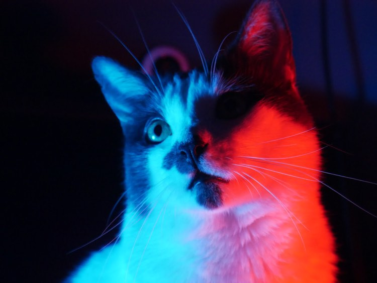
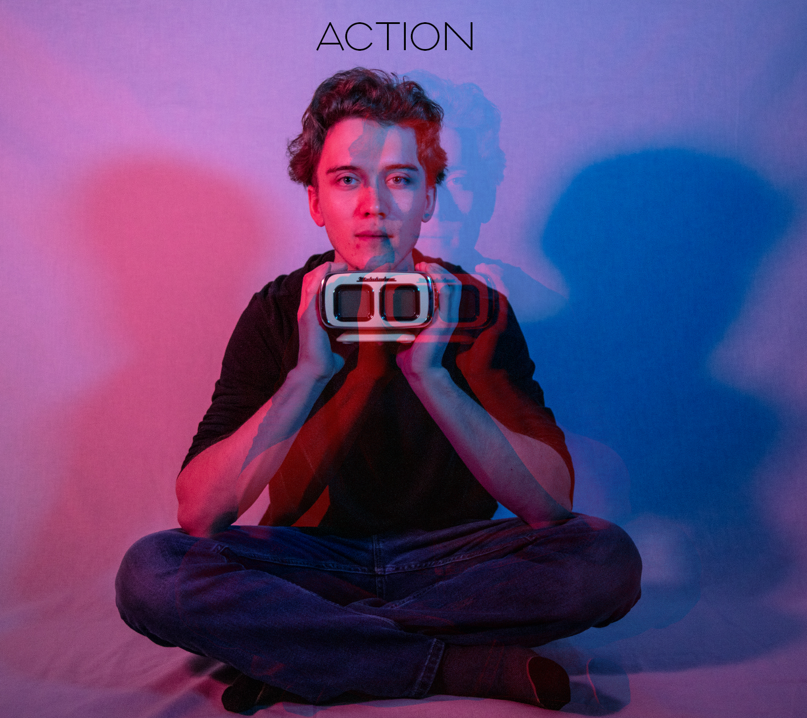

ABOUT ME
Hi! I am Jailyn and my background in film and social media and deep love for video games has inspired me to discover how our experiences drive our interactions with digital media. I am currently a senior at Carnegie Mellon studying Psychology and Human-Computer Interaction. I love the magic of finding out what people need and what’s the best way to give it to them.
Things I am Proud of:
- Co-authored a paper accepted to the CHI conference on accessible research methods
- Was featured in Brooklyn Magazine for my street fashion
- Have a very handsome cat
MY PICTURES

